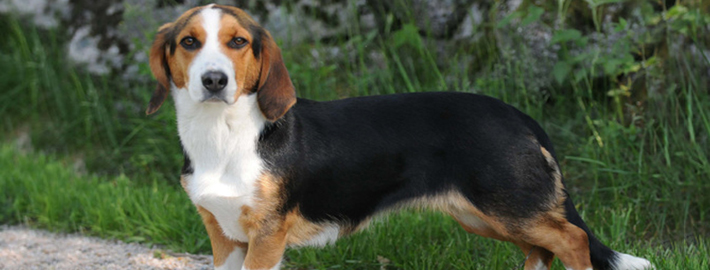
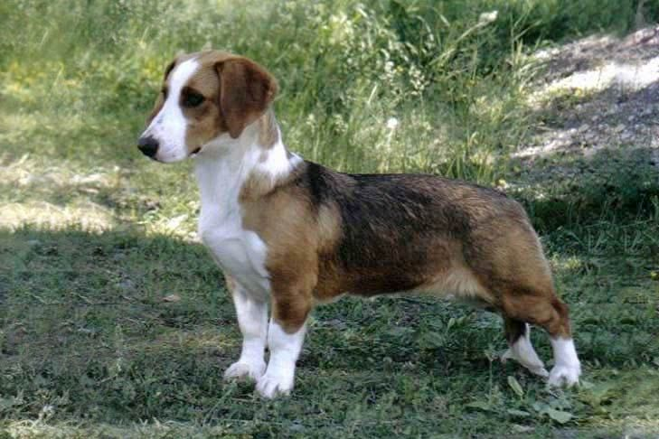
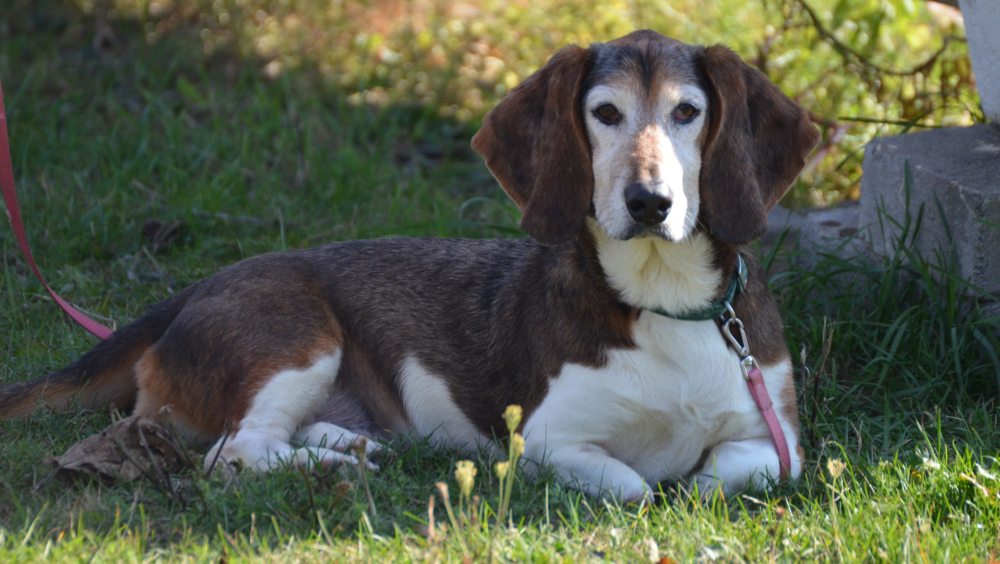
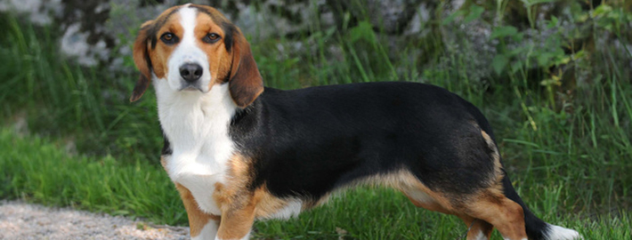
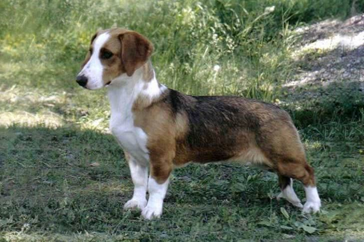
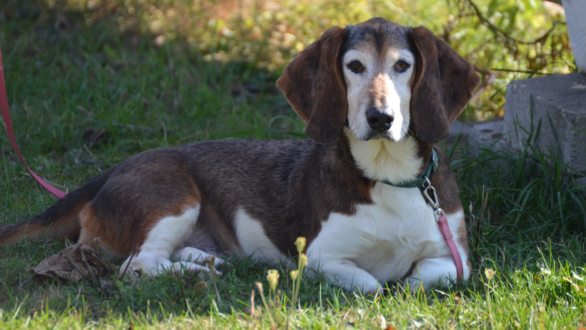

Drever
The Drever's most noticeable characteristic are its long body and short legs, inherited from the Westphalian Dachsbracke, but as a working dog these features are not exaggerated. It has short fur, and is of any color with white markings (but not all white, which has been linked to deafness.) The breed has the typical drop (hanging) ears of a hound, and a long tail. The maximum height of a Drever is 38 cm (15 ins) at the withers, which is about 15 cm (approx. 6 ins) shorter than a long legged hunting hound with the same size body. The Westphalian Dachsbracke is about 2 cm (less than an inch) shorter than the Drever. Alert, calm, friendly and even, the Drever is known for the ongoing slight wag of his tail. The Drever often wants to continue working long after its human companion has satisfied his own hunting instinct. It has a first-class nose and is a powerful tracker. Because of its short legs, it is slower than other hounds. This makes it ideal for maneuvering game toward the hunter's gun. The Drever is a steady worker that hunts hare, fox, and occasionally deer; but this dog has the courage to pit himself against even a wild boar. In such cases, he circles and dodges the prey, warning the hunter by barking furiously. The Drever has an excellent nose and a musical voice which is much larger than his size would seem to warrant. The Drever was bred to be tenacious on the hunt and therefore it is very important that the owners of this breed are just as stern when dealing with him in order to show him where his place is among his human pack. Owners who are determined and consistent with the rules, displaying a natural firm but not harsh authority over the dog will bring out the best in this breed. Passive owners will find the dog to become stubborn and headstrong. Drevers that lack in mental and physical exercise and/or leadership will develop quirks in their temperament. Socialize this dog well.
Small sized German hounds were imported to Sweden in 1910. These dogs gained a reputation as very good deer trackers. In 1947, the larger variety of these dogs was given the name Drever, and it was soon recognized as a Swedish breed. They are considered the first choice breed for deer tracking but are also used for hunting hare and fox. The Drever was recognized by the United Kennel Club January 1, 1996.
Photo Gallery
 




